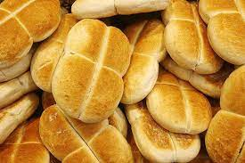
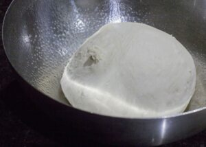
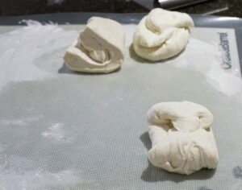
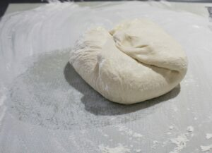
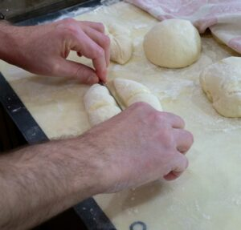
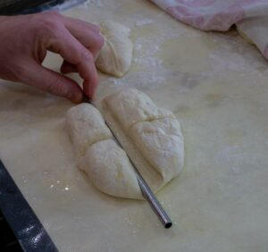
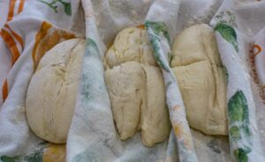
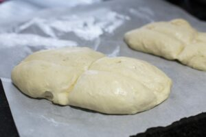
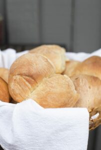

Marraquetas

Marraquetas, Chilean Bread or Pan Francés (
French rolls) or Pan Batido (whipped bread) is
the most classic Chilean bread.
Marraquetas are an everyday bread, not shared with
guests but always present on the family table for
breakfast, lunch, tea, and dinner.
Ingredients
- 3 1/2 cup all-purpose flour
- 3 1/2 cups bread flour
- 1 teaspoon brown sugar
- 2 2/3 cup cold water
- 1 1/2 teaspoon instant yeast
- 2 1/2 teaspoons salt
- vegetable oil spray
Instructions
- Combine flour, salt, brown sugar, and yeast
the mixer, bread machine, or mixer bowl.
Add water and mix until it forms a ball. Dump
onto a floured counter and knead vigorously
for 10 minutes. Place in a clean bowl, drizzle
with vegetable oil, cover the bowl, and let rise
for 30 minutes. Knead gently into a ball and rest
90 minutes or more in the bowl until doubled in size.

- Divide the dough into six equal portions and make
balls with them. Sprinkle lightly with vegetable
oil spray, put them in a large Ziploc bag, and let
and 30 minutes.
- Prepare two baking sheets, cover with parchment
paper, spray with vegetable oil, and coat with
semolina or cornmeal.
- To shape the Marraquetas: Make a ball and stretch
gently by hand, trying to make an oblong shape.
Make a cross with a wooden or metal rod (the handle
of wooden spoon works, for example). Then again,
sprayed with vegetable oil spray and placed in
prepared sheet, put them in the plastic bag and let
them grow for 15 minutes. Refrigerate overnight.




- The day after taking from the refrigerator must have
grown between 50-75% of its original size, let it stand
1 hour at room temperature. Remove from the bag 15
minutes before placing them in the oven.


- Preheat oven to 475F or 245C with a pizza stone inside.
Put an empty pie pan on the oven floor. Put 1 cup of hot
water into the pie pan. Put the Marraquetas in the oven
over the stone, leaving the parchment paper. Sprinkle the
loaves of bread and the oven walls with water slightly.
Repeat 2 minutes later. And then one minute later.
Reduce oven temperature to 450F or 230C.
- Bake for 10 minutes. Rotate the pan. Continue baking for
10 minutes or until well browned. Turn off the oven and
leave in for 5-10 minutes, until they look dark and seem
to not stand another minute in the oven.
- Remove and let stand on a rack for at least 30 minutes. Eat!
